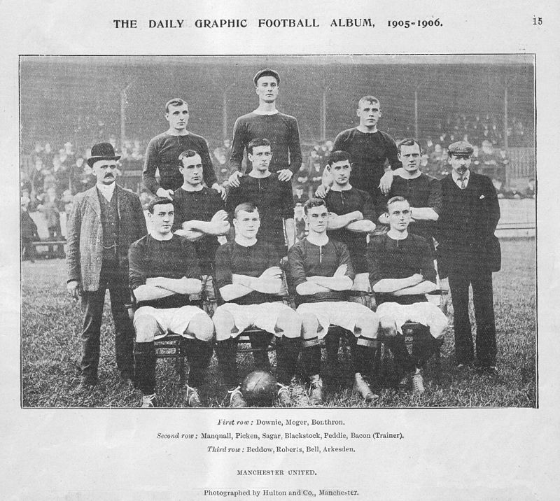
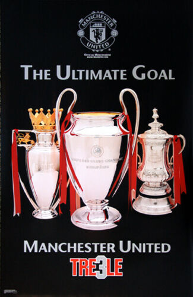
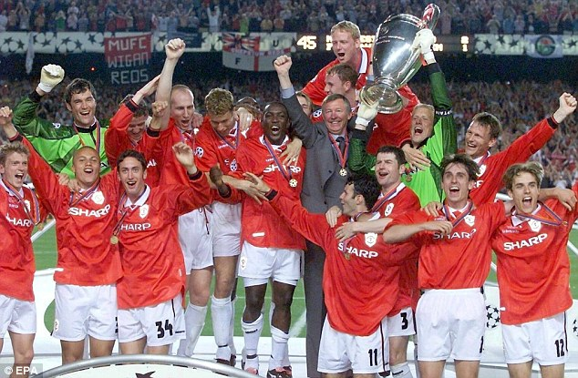
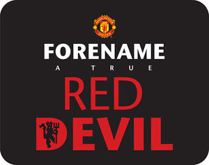
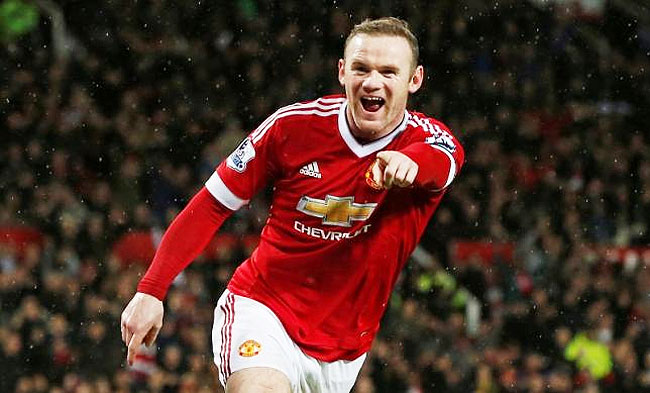
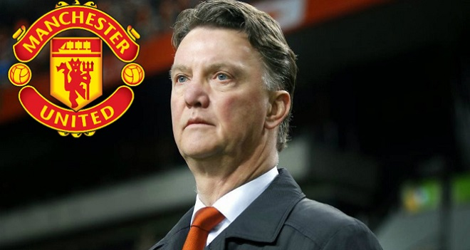
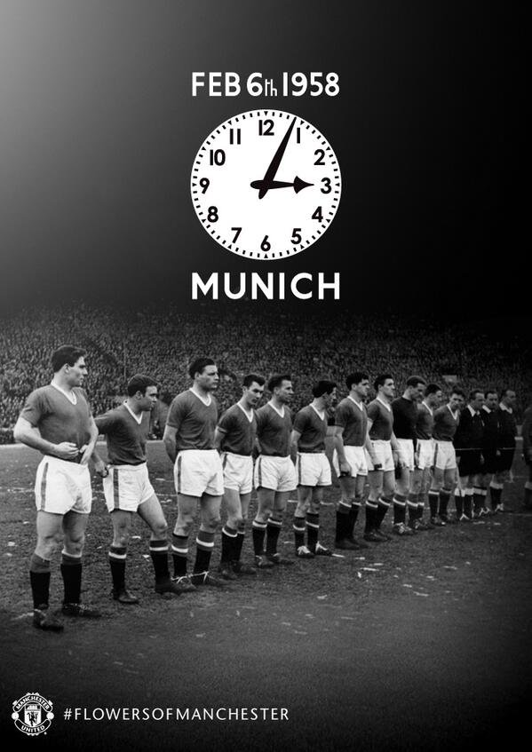

Early Years
Manchester United was formed in 1878 as Newton Heath LYR Football Club by the Carriage and Wagon department of the Lancashire and Yorkshire Railway (LYR)
depot at Newton Heath. The team initially played games against other departments and railway companies, but on 20 November 1880, they competed in their first
recorded match; wearing the colours of the railway company – green and gold – they were defeated 6–0 by Bolton Wanderers' reserve team. By 1888, the club had
become a founding member of The Combination, a regional football league. Following the league's dissolution after only one season, Newton Heath joined the newly
formed Football Alliance, which ran for three seasons before being merged with The Football League. This resulted in the club starting the 1892–93 season in the First
Division, by which time it had become independent of the railway company and dropped the "LYR" from its name. After two seasons, the club was relegated to the Second
Division.
In January 1902, with debts of £2,670 – equivalent to £280,000 in 2019[nb 1] – the club was served with a winding-up order.
In 1922, three years after the resumption of football following the First World War, the club was relegated to the Second Division, where it remained until regaining
promotion in 1925. Relegated again in 1931, Manchester United became a yo-yo club, achieving its all-time lowest position of 20th place in the Second Division in 1934.

Present
Manchester United have won more trophies than any other club in English football, with a record 20 League titles, 12 FA Cups, five League Cups and a record 21 FA
Community Shields. United have also won three UEFA Champions Leagues, one UEFA Europa League, one UEFA Cup Winners' Cup, one UEFA Super Cup, one Intercontinental Cup and one
FIFA Club World Cup. In 1998–99, the club became the first in the history of English football to achieve the continental European treble. By winning the UEFA Europa League
in 2016–17, they became one of five clubs to have won all three main UEFA club competitions.
In July 2012, the club announced plans to list its IPO on the New York Stock Exchange instead. Shares were originally set to go on sale for between $16 and $20 each, but the
price was cut to $14 by the launch of the IPO on 10 August, following negative comments from Wall Street analysts and Facebook's disappointing stock market debut in May. Even after the
cut, Manchester United was valued at $2.3 billion, making it the most valuable football club in the world.Manchester United was the highest-earning football club in the world for 2016–17, with an annual
revenue of €676.3 million, and the world's third most valuable football club in 2019, valued at £3.15 billion ($3.81 billion). As of June 2015, it is the world's most valuable football brand, estimated
to be worth $1.2 billion.

UEFA champions league
In past, there have been many big English teams who had won one of the biggest European league, the champions league.
As there are many big English leagues who has conquered the leaguManchesterhester united were the first ever club in the league to be the winner of UEFA champions league.

Named Red Devils
As the United is known as red devils but Have you ever thought what makes the team having the name “red devil”.
As under management of sir matt burly the United took the nickname “Red devil” from Salford rugby club who loved France under the same name also wearing red shirts.

Goal scorers
We all know there have been many top scorers in past years in the champions league. As Ronaldo has been all time top scorer of UEFA champions league.
But do you know Wayne Rooney has been highest scoring. An Englishman in UEFA champions league with 29 goals in the league.

Non britisher Manager
The United are having many famous and international managers. But there is one thing common in every manager of United is that they all were the English man before the signing of Luis van Gaal.
As the Luis van, Gaal becomes the first non Britisher manager of the red devils.

Clock stopped
Manchester United has been one of the most iconic football clubs but do we know that once the whole united team was destroyed.
As on 6 Feb 1958 when United were coming back from the match against Munich their plane crashed more than half of the player died. Thus, this infamous incidence is called Bayern Munich in disaster.
Oldest Club
We all know that Manchester United has been one of the oldest clubs in England. But do we know that how did United gets their name “The Manchester United”.
As the football club was founded as Newton health in late 1878. And then renamed the Manchester United in April 1902 after the club won’t up for the following debts of £2,670.